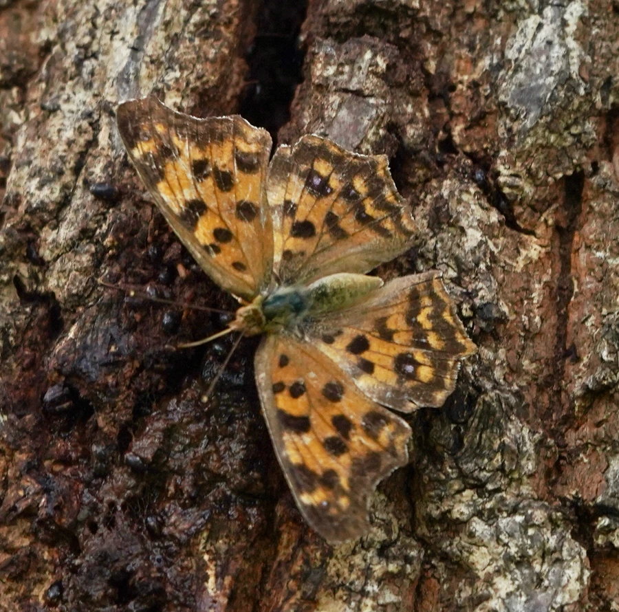

昆虫 · 动物界
黄钩蛱蝶 Polygonia c-aureum

翅缘呈锯齿状、翅腹面有金黄色钩状斑的蛱蝶，停歇时像枯叶，广泛分布于东亚，是常见的花园和公园蝴蝶。
- 分类
- 门节肢动物门纲昆虫纲目鳞翅目科蛱蝶科属钩蛱蝶属
- 栖息环境
- 林缘、公园、花园、河岸与城市绿地，榆树和葎草附近
- 地理分布
- 中国大部分地区、日本和朝鲜半岛
- 保护级别
- 暂无评估
物种志
黄钩蛱蝶翅展约 5–6 cm，翅缘呈不规则的锯齿状，翅面橙黄色带黑色斑纹，前翅顶角附近有深色斑块；翅腹面为褐色，中央有一个醒目的金黄色钩状或 C 形小斑，因此得名。停歇时双翅合拢，整体像一片枯黄的叶子。
它生活在林缘、公园、花园、河岸和城市绿地，成虫喜欢吸食花蜜、树液和腐果汁液，也会在潮湿地面吸水。雌蝶把卵产在榆树、朴树和葎草等植物上，幼虫取食叶片，身体带刺毛。黄钩蛱蝶一年发生多代，以成虫越冬，广泛分布于中国大部分地区、日本和朝鲜半岛。它的枯叶拟态和锯齿状翅缘能有效躲避天敌，是城市和乡村都很常见的蝴蝶。它是城市里最容易见到的蛱蝶之一。
形态与习性
- 食性成虫吸食花蜜、树液和腐果汁液
- 翅展约 5–6 cm
- 识别翅缘锯齿状，翅腹面有金黄色钩状斑
- 拟态停歇时像一片枯黄的叶子
- 分布中国大部分地区、日本和朝鲜半岛
趣味知识
- 黄钩蛱蝶翅腹面的金黄斑块像字母 C，因此得名。
- 它停歇时像一片枯叶，连翅缘的锯齿都像叶子破损的边。
- 黄钩蛱蝶在城市公园里也很常见，是容易观察的蝴蝶。